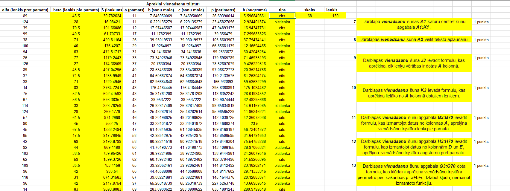
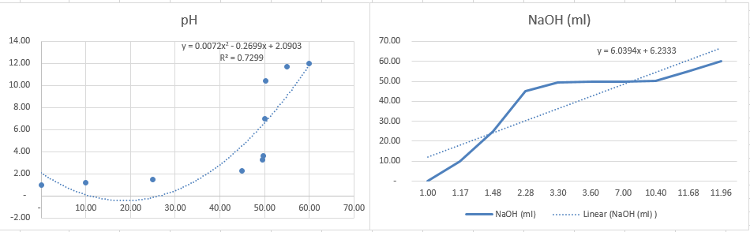

Rīgas Valsts 1. ģimnāzija
Tekstapstrāde ir process, kurā tiek izveidoti, rediģēti, formatēti un saglabāti teksta dokumenti, izmantojot speciālas programmas, piemēram, Microsoft Word vai Google Docs. Šī darbība ļauj lietotājiem viegli mainīt tekstu, piemēram, pievienot, dzēst, pārvietot vai formatēt rakstus dažādos veidos. Tekstapstrāde tiek plaši izmantota gan profesionālajā, gan ikdienas darbā. Šajā sadaļā ir parādīti daži no maniem tekstapstrādes darbiem, ko veicu datorikas stundās.
Šajā sadaļā varat apskatīt dažus no maniem 3D modeļiem, piemēram, 3D kuba skaldni. 3D modelēšana ir process, kurā tiek izveidoti trīsdimensiju objekti datorā, izmantojot specializētas programmas, piemēram, Blender vai AutoCAD. Šie modeļi tiek izmantoti dažādās jomās, piemēram, spēļu izstrādē, arhitektūrā, animācijā un ražošanā. 3D modelēšana ļauj radīt detalizētus un reālistiskus attēlus, kas var tikt izmantoti gan vizualizācijām, gan reālai produkcijas izveidei.
Šis ir video par reklāmas suvenīra izveidi. Video tika veidots ar aplikāciju Capcut, kurā tika izmantota mūzika no youtube un tiktoka.
Šeit ir piemēri no izklājlapām, kuras esmu veidojis datorikas stundās. Šī tika veidotas ar excel. Izklājlapas ir programmas, piemēram, Microsoft Excel vai Google Sheets, kas ļauj organizēt, analizēt un aprēķināt datus, izmantojot rindas, kolonnas un formulas. Tās tiek plaši izmantotas, lai veidotu tabulas, grafikus un veiktu matemātiskus aprēķinus dažādās jomās, piemēram, finansēs un zinātnē. Izklājlapas ir svarīgas arī datu vizualizācijai un lēmumu pieņemšanai.
 